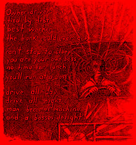

Remembering Old Fiddlin' Dan
By Arthur J Miller
There are those that view working people as a uncultured mass of laboring muscle This image is seen on tv, in movies, written in books and taught by professors who view themselves as the authorities on labor. This image has become a part of the market driven commodity called American Culture. For those who take the time to look under the layers of fabricated deceit, you will find working class culture. There among the toiling masses you will find story tellers, poets, artists, song writers and musicians. Their culture is not produced for the market place, but rather it is an expression of their desires and lost dreams.
There are some very unique characters out there, and I can honestly say I have learn more from just sitting around listening to them, than I have ever learned from reading books. One of the more interesting and tragic stiffs I ever met was Old Fiddlin' Dan.
I had gone through truck driving school and had my CDL Class A License. Trucking companies have their own training which starts off in a class room and after you passed a bunch of tests, then they will send you out on the road a trainer. My first trainer was a real ass who taught me very little and went out of his way to make my life harder than it already was.
One day we were heading west and he turned over the truck to me right before we were to cross the Sierras. I started doing my pretrip inspection, but the ass told me that we did not have time for it, because he wanted to be across the mountains before dark. The ass also stated that he only inspected the truck, at most, once a day. And just like an asses fool, I went along with his foolishness.
Up the road I fell in line with other trucks at the Truckee inspection station. After I was weighted, I was told to pull over to the inspection bay. They found that the trailer brakes were out of lineament and a leak in an airhose. We had to pay some weigh station vultures to get us legal, for the law says that we cannot do it ourselves unless we are certified. When we got back to our terminal I quit. There ain't no way I would put up with that ass. And anyway, I did not want to learn my truckin' from an ass.
I hooked up with another company and they sent me out with a trainer. That trainer turned out to be Old Fiddlin' Dan. Now if you were just a slacker who did not care about real learning, Old Dan could be a real terror. On the other hand if you really wanted to learn about trucks and truckin' there was no better teacher around.
On the second night out, Old Dan pulled into a high desert rest stop and pulled out a beatup violin case. He told me that we were going to be here a little while and to go out a stretch my legs. He jumped out of the rig and walked over to a far corner of the rest stop. I watched him out of curiosity as he stood close to the edge of a buff, looking out across the land. It was dusk time and the sun was not long to be seen. After standing there a while, he opened up his case and pulled out a fiddle. Now Old Dan did not have the greatest fiddle technique my ears had ever heard. But he played as if there was a real connection between him and his surroundings. That is something that all the high class technique could never produce.
I sat down and listen and watch him as the sun went down below the far off mountains. It was one of those life experiences that will never leave you. A gift, a treasure to hold on to until buried in a hole. And if the spirit lives on in some way, then that experience was immortal.
When Dan came back to the truck he told me that I would take over driving for a while. Unlike the ass, Dan insisted on a pretrip inspection every time we changed drivers. He would say; "only trust another person with your life when you have to." He would watch my inspection every time I did one, not because he did not trust me, but because he did not have to trust me.
After a hour or so of driving, I asked Dan about his fiddle playing. He told me that he had started playing when he was young, but for a number of years working, he just never had time for it. He had found that truck driving was something that was hard to get away from, even when you are not driving. It hangs on you like a dead weight upon your shoulders. Things like watching tv or shooting the shit with other truckers just did not relax him. So he said that he brought out his old fiddle and started to play it when he needed a rest of both body and mind. He would pick some of the nicest looking natural places to take his rest and then go out by himself and just fiddle away.
Sometimes, he said, at special places, as the sun went down or came up in the morning, he felt connected to everything around him. It was, to him, almost a religious experience Even when he could not find that special place, you might hear him fiddlin' away in some corner of a truckstop. He told me that with his fiddle he was able to make peace with himself for all that he had given up on the long hard road of truckin'.
Old Dan was not a book learned socialist or any other kind of 'ist, he just was able to see things without blinders that society installs upon most people. He could think things through and come up with logical conclusions. And most of the time, those conclusions were very close to my learned radicalism. But coming from Dan it did not seem like an ideology, it was plan old common sense.
He did not much care for the bosses. He called them vultures preying upon the honest work of common folks. Nor did he care much for politicians or the government, who he viewed as always sticking their noses into other people's affairs. He talked about the day to come when common folks will have taken all that they can and rid themselves of the bums and slackers who make a living off the common folks. In a lot of ways he sound like some of the old time Wobblies I had known.
Late one night driving the North Dakota road, we were listening to the news on the radio which was telling about some Black workers suing their boss because of discrimination. Old Dan gave out a loud yap and said "kick that boss in the ass once for me!" That rather surprised me because Old Dan was a southerner, he had come from the East Tennessee hill country. He saw the look on my face then asked me if I was prejudice. I told him no. He them when on to say, that "God had place all people on this earth and that most all people worked hard for the same things. It was only the bums and the slackers that try to get common folks hating each other. Common folks must stick together or else the bums and slackers will have easier prey."
Old Dan would often speak of his dream of owning his own truck and no longer having a bum on his back. He said he was close to having the money he needed for a down payment. In time he quit the company and got his truck. He ran harder than he had ever done before to keep up the payments on his truck and on his home where his family lived.
As is often the case of many working folks, fate don't seem to let them escape to their dreams. Within a year Old Fiddlin' Dan suffered a stroke and could not truck nor fiddle no more. The bank got his truck and home and his family had to move out of their beloved Tennessee Hills to the city. I was told by a friend that when Dan lost everything his lost his will to live. After going to sleep one night Old Fiddlin' Dan never woke up again. No matter what the doc said, Old Dan died of a broken heart.
Why do we live in a world where the dreams of the many are trampled upon by the greed of a few bums and slackers? Did some God up high, degree this as our fate so long ago? These things I just don't have an answer for. All I know is that as long as the few want more than they can use, the many will do without what the need. And our dreams are not a slackers fantasies, they are a necessity of life itself. For what would the existence of the toiler be worth without the dreams of something better?
When ever I am out on the open road, I try to stop at some special place. There I will just sit and listen. And I swear by all that is good, I can almost hear a far off fiddle play as if that sound was a part of all that is around me. Old Fiddlin' Dan was a hard working common man, but to me he will always live on as a true working class saint.